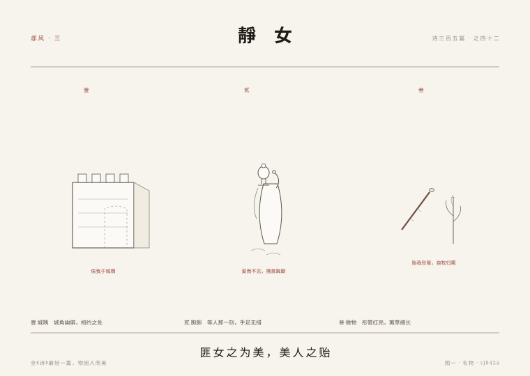
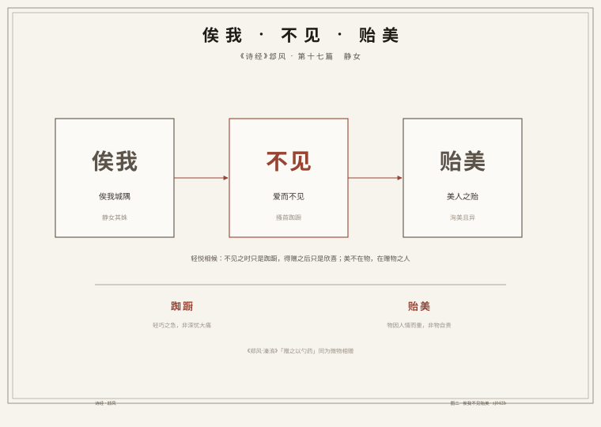

第四十二篇 静女
邶风 · 之三 SJ042
朗读 · 普通话
依经文正文朗读，句读从文；不配乐、不改速、不加拖腔。全库同一音色（豆包 TTS），非播音员录制。
一 解题
诗三判：
- 谁在说：一个等候约会的人。他在城角等那位娴静的女子；她却藏着不露面，他急得搔着头徘徊；后来她赠他彤管，又从郊野带回茅芽，他把这两件小东西看得珍重。
- 说什么事：娴静的女子真美，约我在城角相见。她藏着不出来，我搔首徘徊。娴静的女子真妍媚，赠我一枝彤管；彤管红亮，真喜欢你这颜色。从郊野带回茅芽，确实美得出奇。不是这草本身美，是因为美人所赠。
- 为何编在此：《北风》写乱世相携，此篇写静候约会；一急一闲，同卷相配。全《诗》最轻的一篇，不涉怨刺，不涉大节，只写等人那一刻的手足无措，与收到小礼物时的珍重。
《毛序》：「《静女》，刺时也。卫君无道，夫人无德。」——旧说附会君夫人之失，以为刺时。
朱子《诗集传》：「此淫奔期会之诗也。」——朱子直作男女相约之诗。
本库的看法：这首诗全《诗》最轻，勿解重。骨在「爱而不见，搔首踟蹰」——写的是等人那一刻的手足无措。
一章藏与寻，二章管与悦，三章荑与珍；物件微小，情绪真切。彤管、茅芽都不是什么重礼；美不在物，在赠物的人。
汉儒求美刺，朱子斥淫奔，本库只取一段轻巧的相候相赠，不作道德判语。
二 经文
第一章
靜女其姝，俟我于城隅。愛而不見，搔首踟躕。
第二章
靜女其孌，貽我彤管。彤管有煒，說懌女美。
第三章
自牧歸荑，洵美且異。匪女之為美，美人之貽。
分章：毛传、朱子皆三章，章四句。一章俟而不见；二章贻管而悦；三章归荑而珍。一章写等候之态，二、三章写所得之物，物愈细，情愈重。
三 韵读
| 一 |
姝、隅、踟躕 |
侯部 |
| 二 |
孌、管；煒；美 |
元部／微部／脂部 |
| 三 |
荑、貽；異；美 |
脂部／職部／脂部 |
一章侯部圆转，状徘徊踱步之声；二章元部先合后散，煒、美两转，颜色与心情分押；三章脂部回环，「异」字职部一戛，再落到「美」字。全篇落脚声是「美人之贻」——物因人情而美。
四 字义与名物
- 靜——娴静安详。一说通「靖」，善也，两说存参，正文取娴静。
- 姝（shū）——美。
- 俟（sì）——等待。
- 城隅——城角，城之幽僻处。
- 愛而不見——藏着不露面。愛通「薆」，隐蔽。不是「喜爱」之爱。
- 搔首——挠头，着急之态。
- 踟躕（chí chú）——徘徊不进、抓头犹豫之貌。
- 孌（luán）——妍媚美好。
- 貽（yí）——赠送。
- 彤管——红色管状之物。一说女史所用红管笔，一说荑之赤茎，两说入存疑。
- 有煒——煒（wěi），赤明貌；有，语助。
- 說懌——喜悦。說通「悦」；懌，喜。
- 女美——女通「汝」，指彤管；喜欢你这红色。
- 牧——郊野，野外放牧之地。
- 歸荑——归通「馈」，赠送；荑（tí），初生茅芽。
- 洵（xún）——信，确实。
- 異——奇异，出众。
- 匪女之為美——非这荑草本身美。匪，非；女通「汝」，指荑。
- 美人之貽——美人所赠。
五 今译
第一章
娴静的女子真美，约我在城角相见。她藏着不露面，我急得挠头徘徊。
第二章
娴静的女子真妍媚，赠我一枝红管。红管光鲜红亮，真喜欢你这颜色。
第三章
从郊野带回茅芽，确实美得出奇。不是这草本身美，是美人所赠啊。
译注：「静」译娴静；「俟」译等待；「爱」读「薆」，隐蔽；「踟蹰」译徘徊；「彤管」存二说；「说怿」译喜悦，说通悦；「女」通汝，前指管、后指荑；「归」通馈，赠送；「洵」译确实。
六 章旨
一章：俟而不见。城隅相候，人藏不出；搔首踟蹰，手足无措。
二章：贻管而悦。彤管红亮，悦其颜色；所悦在物，所系在人。
三章：归荑而珍。茅芽微物，洵美且异；非物自美，美人之贻。
一章写等候那一刻，二、三章写事后所得；管与荑一物比一物轻，珍重一层比一层深。全篇最轻，情却最真：美不在彤管与荑草，在赠物的那个人。
七 诗教
- 赋：候于城隅、贻管归荑皆实写相会相赠；一章「爱而不见」是情状之赋，无深托比兴。
- 观：可观一「情」。等人之急、得物之珍，皆从细微动作与小物上见；观人情之厚薄，先观其于微物如何珍重。
- 群：所系只一美人；相赠相悦，两人之群，不及其余。
- 怨：此篇无怨。不见之时只是踟蹰，不见嗔怪；得赠之后只是欣喜，别无嫌隙。
八 分寸与边界
- 不可把「爱而不见」的「爱」解作喜爱。爱通「薆」，隐蔽；是她藏着不出来，不是喜爱我却不见。
- 不可把「搔首踟蹰」读作苦闷绝望。这是等人那一刻的手足无措，轻巧之急，不是深忧大痛。
- 不可把彤管定为女史笔管。红管笔与荑之赤茎两说并存；诗只写其红亮，器物形制不可坐实。
- 不可把「说怿女美」的「女」解作女子。女通「汝」，此处指彤管；下章「匪女」之女才指荑，皆非指美人。
- 不可把此篇牵入美刺或淫奔之教。诗只写相候相赠之轻悦；汉儒刺时、朱子淫奔，皆外加的评判，本库不作道德断语。
九 存疑
- 彤管为何物：一说女史所执赤管笔，一说初生荑草之赤茎，一说红色管状花草。本库存三说，图中只作红管与茅芽并置。
- 静字之义：一说娴静，一说通「靖」训善。本库从娴静，存善义。
- 相会二人身份：一说贵族男女，一说民间青年；诗中器物简素，本库不坐实身份。
- 城隅所指：城角幽僻处，一说城隅之角楼；本库取城角。
- 编次与本事：《毛序》附会君夫人，朱子以为期会；本事今无可考。本库只取诗中相候相赠之情。
十 跨典
- 《郑风·溱洧》「维士与女，伊其相谑，赠之以勺药」——同是男女相赠；彼游春相谑，此城隅候人，赠物皆轻而见情。
- 《邶风·击鼓》「执子之手，与子偕老」——同卷之手；彼军中别誓沉重，此握手未写而相赠轻巧，轻重相形。
- 《周礼·天官·女史》「女史掌书内之法，掌彤管之法」——彤管笔说所据；可参彤管之旧制，诗中是否即此，两存。
- 《召南·野有死麕》「白茅纯束，有女如玉」——微物相赠之对读；彼以茅包鹿，此以荑相贻，物微而情挚。
- 《邶风·燕燕》「先君之思，以勖寡人」——同卷女子之事；彼送别郑重，此相会轻巧，一庄一谐。
十一 双卡与图
双卡五对：
| 爱（薆，隐蔽） |
喜爱（误训） |
| 踟蹰（轻巧之急） |
苦闷绝望（重训） |
| 女（汝，指物） |
女子（误指） |
| 物因人情而美 |
物自可贵（浅看） |
| 轻悦相候 |
美刺淫奔（外加评判） |

图一 · 城隅·搔首踟蹰·彤管荑草 名物图

图二 · 俟我—不见—贻美 义理图
读图三处：
- 城隅画转角与墙堞：名物图取城墙转角、墙堞短线与一处墙角遮屏；不画整座城。
- 搔首之人画背身与抬手：中格人作背侧立姿，一手抬至头侧，肩线、宽袖、衣裾俱到；不画正面眉目。
- 彤管与荑草分置两物：三格前半红管有炜，后半茅芽细长带叶；二物形质分开，不画成同一枝花。